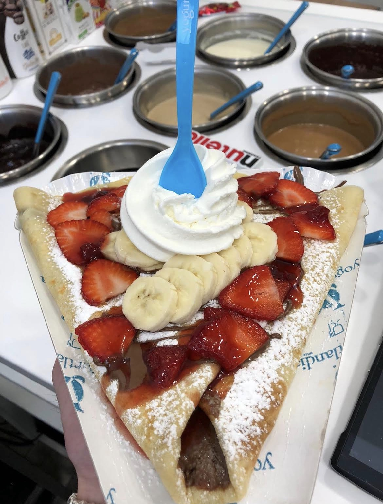
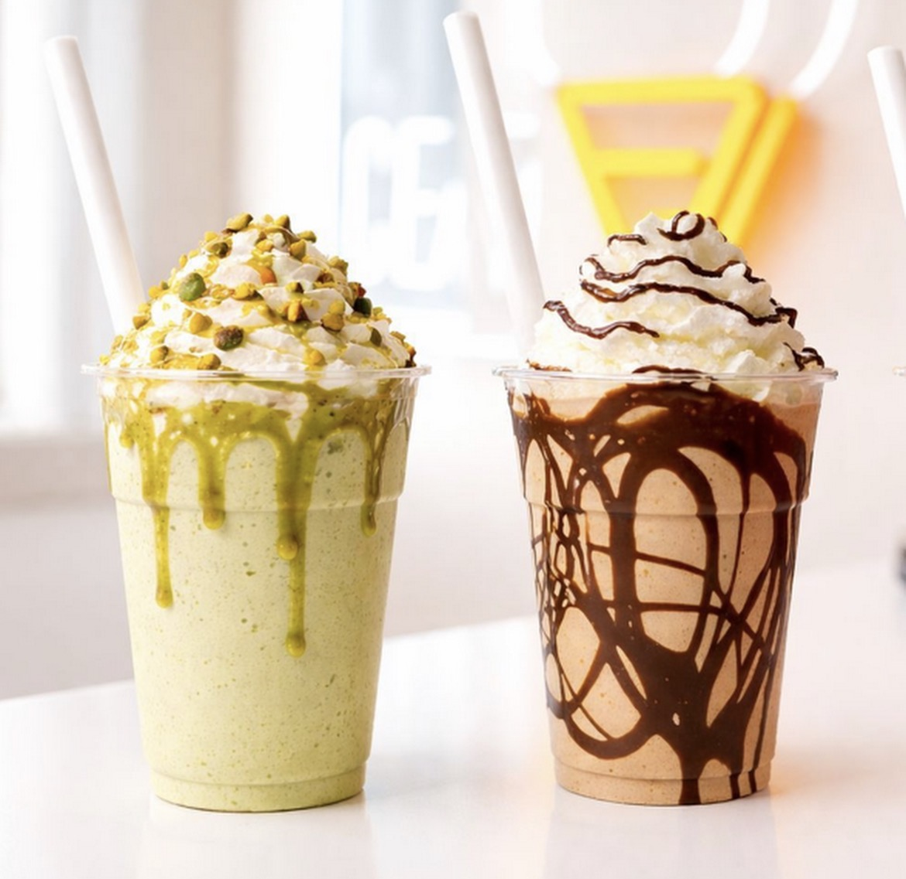
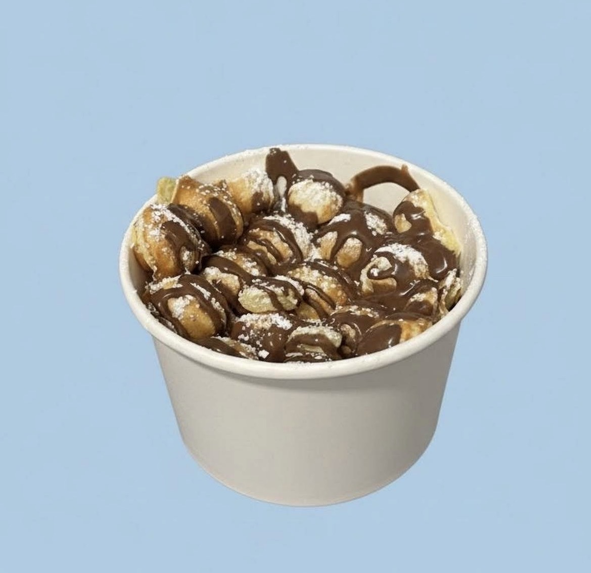
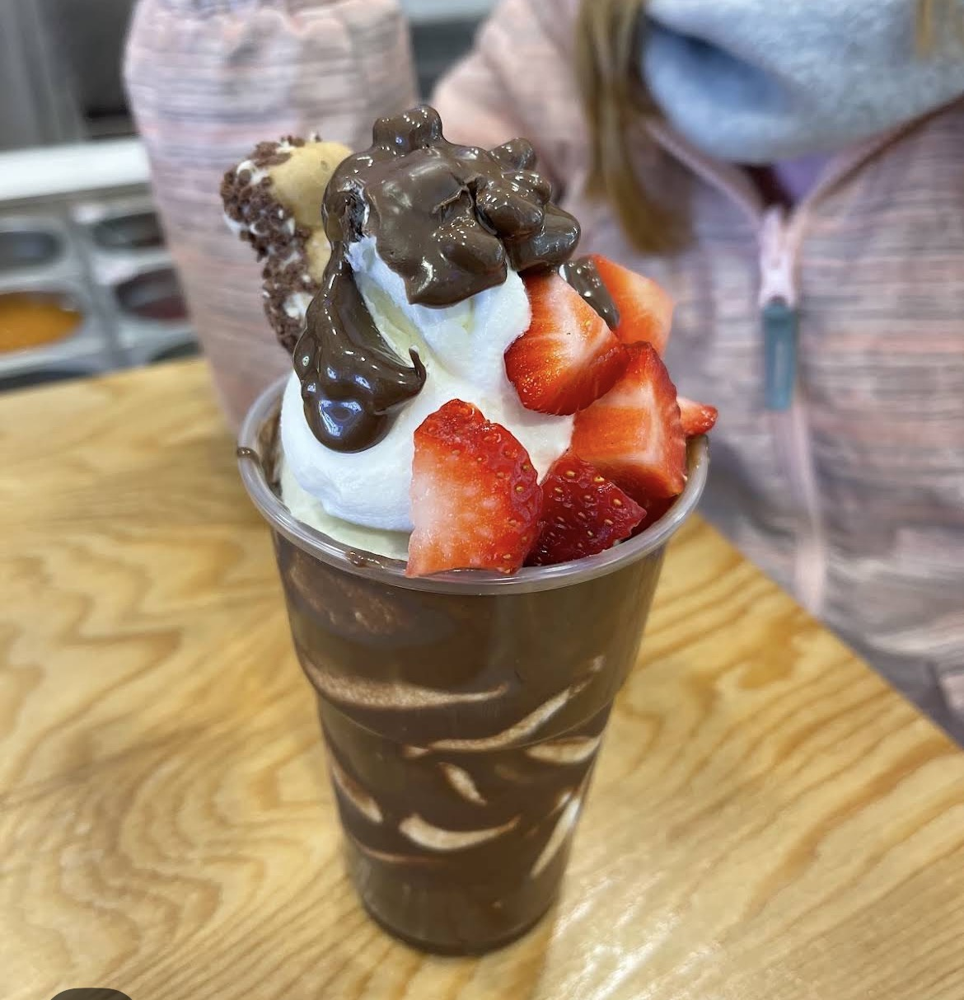

Ingredienti freschi
Yogurt e ingredienti scelti per una pausa leggera e gustosa.
Latte fresco italiano, frutta di stagione, granelle croccanti e golose salse. Crea la tua coppetta perfetta!
Via Vittorio Emanuele 431/A · aperti tutti i giorni fino a tarda notte

Il Nostro Yogurt
Fermati da noi tra una visita e l'altra e componi la tua pausa come piace a te.
Yogurt e ingredienti scelti per una pausa leggera e gustosa.
Frutta, creme, salse e granelle per personalizzare la tua coppetta.
Yogurt, crêpes e bevande: scegli la specialità che preferisci.
Galleria
Le foto dei prodotti e delle specialità del locale.






Menu & Topping
Scegli la tua specialità e consulta anche il menu fotografico ufficiale.
Il formato giusto per una pausa veloce: yogurt a scelta e un topping.
Più yogurt e spazio per frutta fresca, salse e croccantini.
La coppetta da condividere, o da concedersi tutta per sé.
Croccante fuori, cremoso dentro, perfetto da passeggio.
Per prezzi e disponibilità aggiornati, fai riferimento al menu fotografico qui sotto o chiedi in negozio.
La disponibilità dei topping varia in base alla stagione.
Calda e fragrante, farcita a tua scelta.
La crêpe calda accompagnata dal gelato.
Cialda calda e dorata con creme e topping a tua scelta.
Yogurt e gusto a scelta, frullati fino a una consistenza vellutata.
Frutta fresca e yogurt, personalizzabile con i tuoi gusti.
Il tè freddo con le perle, in diversi gusti.
Per confermare prezzi e disponibilità, consulta il menu fotografico o chiedi in negozio.
Menu del locale
Consulta il menu originale e apri la foto per ingrandirla.
 Apri il menu ingrandito ↗
Apri il menu ingrandito ↗Recensioni
Una pausa apprezzata nel cuore di Palermo.
Un locale a due passi dalla Cattedrale, pulitissimo, con personale accogliente e prodotti di ottima qualità.
Lo yogurt è buonissimo perché non è troppo dolce: una vera alternativa al gelato, perfetta dopo una passeggiata in centro.
Tantissimi gusti e una grande scelta di topping freschi. Lo staff consiglia abbinamenti golosi.
Valutazione 4,6 su Google · 4,3 su Tripadvisor
Dove Siamo & Orari
Via Vittorio Emanuele, 431/A
90134 Palermo (PA)
Zona Cattedrale · Corso Vittorio Emanuele
Gli orari possono variare nei giorni festivi: controlla sempre su Google Maps.